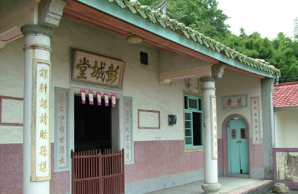

遊嘍西酷...

探索西湖的特色景點

宣王宮
宣王宮位在苗栗西湖鄉，前身是雲梯書院。 雲梯書院建於清道光二十年(西元1840年)，至今已將近有１７０年的歷史，早期為漢學私塾，現今書院樣貌已不復見，但書院時期的孔子牌位依舊供奉於宮中。 宣王宮中最珍貴的文物就是外庭左側石雕的「惜字亭」，高度約三公尺的惜字亭共分為三層，由下至上為底座、焚燒字紙的敬聖亭以及倉頡先聖祠。
媽祖石雕
五龍宮位於西湖鄉的三湖村，而在五龍宮後龍洞溪畔的新生地上有一座面容慈祥的媽祖石雕，這座媽祖石雕是由廈門大學藝術學院的副院長李為祀所設計，高度為２６．６６公尺，基座是以１６１塊青斗石所砌成，主神則是用２９９塊花崗石組合而成，是目前東南亞最高的石雕神像。

劉恩寬古宅
劉恩寬古宅興建於清乾隆二十五年(西元1760年)，至今約有兩百五十年的歷史，先後共修建過三次，現今的樣貌為民國五十二年時所修建。劉恩寬古宅為彭城劉氏家族的宗祠，主祀家族中的來台開基始祖恩寬公與祖先之神位，並配祀有觀音佛祖與福德正神。古宅為傳統的三合院式建築，屋脊採用燕尾翹起式，並且覆蓋綠色的琉璃瓦，整體建築顯得相當高貴素雅。